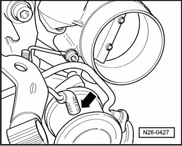
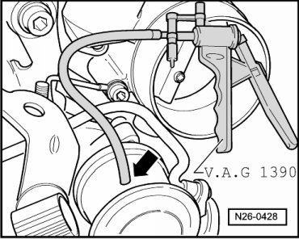
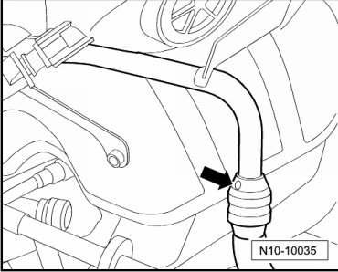

Secondary Air Injection System Combination Valve, Checking
Secondary Air Injection System Combination Valve, Checking
Special tools, testers and auxiliary items required
• Hand vacuum pump (V.A.G 1390)
Test Conditions
• Vacuum lines and hose connections free of leaks
• Vacuum lines not blocked or kinked
Test Sequence
- Pull vacuum hose from Secondary Air Injection (AIR) solenoid valve (N112) off combination valve - arrow -.

• Do not use compressed air during following check!
- Connect hand vacuum pump (V.A.G 1390) to vacuum hose from combination valve - arrow -.

- Pull off pressure hose to combination valve at coupling - arrow -, push auxiliary hose onto end of pipe and pressurize slightly by blowing into hose. Combination valve must be closed.

- Operate hand vacuum pump. Combination valve must open.
If the combination valve does not open:
Replace combination valve --> [ (Item 1) Combination valve ] Secondary Air Injection System, Assembly Overview.